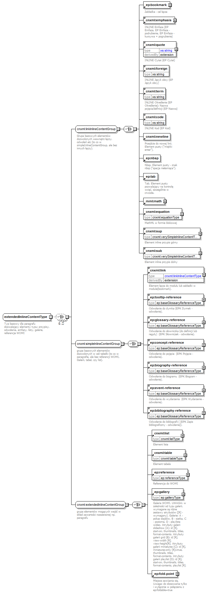

| diagram |  | ||
| namespace | http://cnx.rice.edu/cnxml | ||
| properties |
|
||
| children | ep:bookmark cnxml:emphasis cnxml:quote cnxml:foreign cnxml:term cnxml:code cnxml:newline ep:nbsp ep:tab m:math cnxml:equation cnxml:sup cnxml:sub cnxml:link ep:tooltip-reference ep:glossary-reference ep:concept-reference ep:biography-reference ep:event-reference ep:bibliography-reference cnxml:list cnxml:table ep:reference ep:gallery ep:fold-point | ||
| used by |
|
||
| annotation |
|
||
| source | <xs:complexType name="extendedInlineContentType" mixed="true"> <xs:annotation> <xs:documentation>Typ bazowy dla paragrafu dozwalający elementy typu: przypisy, odwołania, emfazy, listy, galerie, referencje WOMI</xs:documentation> </xs:annotation> <xs:choice minOccurs="0" maxOccurs="unbounded"> <xs:group ref="cnxml:linkInlineContentGroup"/> <xs:group ref="cnxml:simpleInlineContentGroup"/> <xs:group ref="cnxml:extendedInlineContentGroup"/> </xs:choice> </xs:complexType> |